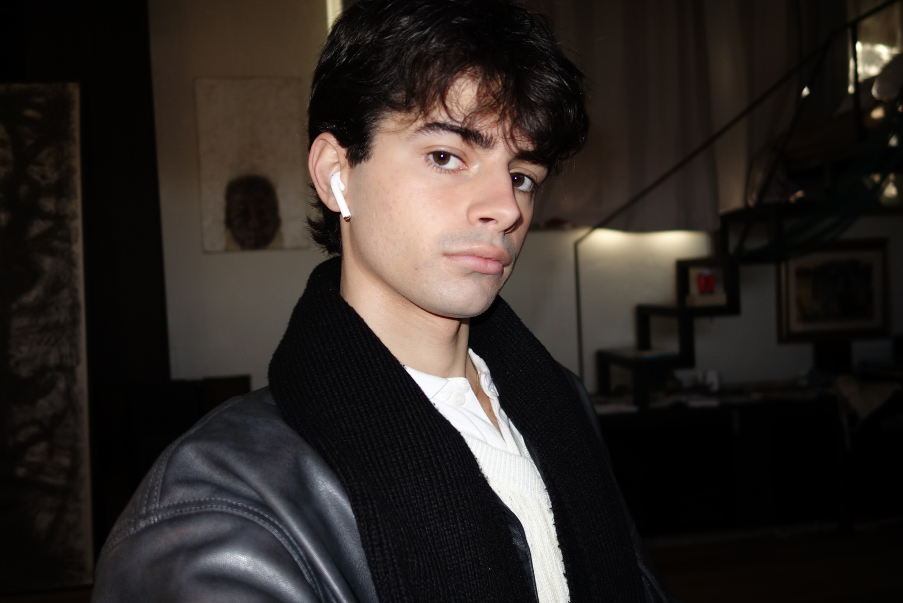

Mirlind Jakupi
Mirlind infuses personal experiences with influences from literature, film and art history, transforming intimate memories into powerful images that invite viewers into a world that feels both familiar and strange. After completing his foundational studies in art at Wiks folkhögskola in Sweden, he continued his education at the Nuova Accademia delle Belle Arti in Rome. His works explores universal themes of vulnerability, existence and the deep-seated human need to be remembered. Mirlind has showcased his art in several exhibitions across Sweden and Italy, including his interactive public performance in Rome's Parco degli Acquedotti. Through expressive works he strives to challenge norms and create space for unheard voices.
Education
2022/23 Wiks folkhögskola, Art and Design, Uppsala, Sweden
2024/25 Nuova Accademia delle Belle Arti, Painting and Visual Arts, Rome, Italy
